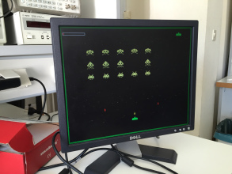
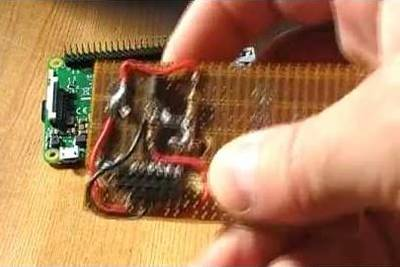

2016-08-11 - Nº 67

Editorial
Esta é a Newsletter Nº 67 que se apresenta com o mesmo formato que as anteriores. Se gostar da Newsletter partilhe-a!
Todas as Newsletters encontram-se indexadas no link.
Esta Newsletter tem os seguintes tópicos:
Esta semana foi publicado um artigo sobre um trabalho levado a cabo pela equipa de cientistas que em 2013 encontraram vulnerabilidades graves que permitiam ligar os carros do grupo Volkswagen. Na altura a empresa ameaçou a equipa com uma ação em tribunal e conseguiu atrasar a publicação deste trabalho dois anos. A equipa continuou o seu trabalho e descobriu problemas ainda mais graves que permitem com um equipamento de baixo custo abrir as portas dos carros produzidos pelo mesmo grupo. Entre hoje e amanhã vão cruzar os céus do nosso planeta restos de um antigo cometa que ao entrarem em contacto com a nossa atmosfera irão incendiar-se. A Seagate apresentou no simpósio de Memórias Flash um Disco SSD de 60 Terabytes.
Na Newsletter desta semana apresentamos diversos projetos de maker. Na rubrica "Documentação" apresentamos duas revistas que podem ser descarregadas livremente e que esta semana são a newelectronics de 9 de Agosto 2016 e a Electronics Maker de agosto de 2016.
 João Alves ([email protected])
João Alves ([email protected])
O conteúdo da Newsletter encontra-se sob a licença  Creative Commons Attribution-NonCommercial-ShareAlike 4.0 International License.
Creative Commons Attribution-NonCommercial-ShareAlike 4.0 International License.
Novidades da Semana ^
A New Wireless Hack Can Unlock 100 Million Volkswagens
"In 2013, when University of Birmingham computer scientist Flavio Garcia and a team of researchers were preparing to reveal a vulnerability that allowed them to start the ignition of millions of Volkswagen cars and drive them off without a key, they were hit with a lawsuit that delayed the publication of their research for two years. But that experience doesn’t seem to have deterred Garcia and his colleagues from probing more of VW’s flaws: Now, a year after that hack was finally publicized, Garcia and a new team of researchers are back with another paper that shows how Volkswagen left not only its ignition vulnerable but the keyless entry system that unlocks the vehicle’s doors, too. And this time, they say, the flaw applies to practically every car Volkswagen has sold since 1995. Later this week at the Usenix security conference in Austin, a team of researchers from the University of Birmingham and the German engineering firm Kasper & Oswald plan to reveal two distinct vulnerabilities they say affect the keyless entry systems of an estimated nearly 100 million cars. One of the attacks would allow resourceful thieves to wirelessly unlock practically every vehicle the Volkswagen group has sold for the last two decades, including makes like Audi and Skoda. The second attack affects millions more vehicles, including Alfa Romeo, Citroen, Fiat, Ford, Mitsubishi, Nissan, Opel, and Peugeot."
Look Up! Perseid Meteor Shower Peaks Aug. 11-12
"Make plans now to stay up late or set the alarm early next week to see a cosmic display of “shooting stars” light up the night sky. Known for it’s fast and bright meteors, the annual Perseid meteor shower is anticipated to be one of the best potential meteor viewing opportunities this year. The Perseids show up every year in August when Earth ventures through trails of debris left behind by an ancient comet. This year, Earth may be in for a closer encounter than usual with the comet trails that result in meteor shower, setting the stage for a spectacular display."
Seagate's 60TB SSD for businesses is world's largest
"The bar for solid state drive (SSD) capacity has officially been set, and Seagate is the company that set it. At the 2016 Flash Memory Summit in Santa Clara, CA, Seagate displayed its new 60TB Serial Attached SCSI (SAS) SSD, the world's highest capacity SSD. With capacity like that, one would only need 17 individual drives to reach 1 petabyte of capacity, Seagate noted in a photo it displayed on Twitter. The drive is housed in an HDD 3.5-inch form factor, and is "ideal for large storage arrays, active archives and read-intensive environments," a display said."
Outras notícias
- Intel + Nervana
- NETLIST unveils HYBRIDIMM™ storage class memory product with key industry partners
- Introducing mbed OS 5
- 1,007 dancing robots break world record in China
- Raspberry PI as retail product display
Ciência e Tecnologia ^
MIT and DARPA Pack Lidar Sensor Onto Single Chip
"Light detection and ranging, or lidar, is a sensing technology based on laser light. It’s similar to radar, but can have a higher resolution, since the wavelength of light is about 100,000 times smaller than radio wavelengths. For robots, this is very important: Since radar cannot accurately image small features, a robot equipped with only a radar module would have a hard time grasping a complex object. At the moment, primary applications of lidar are autonomous vehicles and robotics, but also include terrain and ocean mapping and UAVs. Lidar systems are integral to almost all autonomous vehicles and many other robots that operate autonomously in commercial or industrial environments."
Sprinkling of neural dust opens door to electroceuticals
"Because these batteryless sensors could also be used to stimulate nerves and muscles, the technology also opens the door to “electroceuticals” to treat disorders such as epilepsy or to stimulate the immune system or tamp down inflammation. The so-called neural dust, which the team implanted in the muscles and peripheral nerves of rats, is unique in that ultrasound is used both to power and read out the measurements. Ultrasound technology is already well-developed for hospital use, and ultrasound vibrations can penetrate nearly anywhere in the body, unlike radio waves, the researchers say."
Tiny high-performance solar cells turn power generation sideways
"University of Wisconsin—Madison engineers have created high-performance, micro-scale solar cells that outshine comparable devices in key performance measures. The miniature solar panels could power myriad personal devices — wearable medical sensors, smartwatches, even autofocusing contact lenses. Large, rooftop photovoltaic arrays generate electricity from charges moving vertically. The new, small cells, described today (Aug. 3, 2016) in the journal Advanced Materials Technologies, capture current from charges moving side-to-side, or laterally. And they generate significantly more energy than other sideways solar systems."
Documentação ^
A documentação é parte essencial do processo de aprendizagem e a Internet além de artigos interessantes de explorar também tem alguma documentação em formato PDF interessante de ler. Todos os links aqui apresentados são para conteúdo disponibilizado livremente pelo editor do livro.
Revistas
-
"New Electronics is a fortnightly magazine focusing on technological innovation, news and the latest developments in the electronics sector. Downloadable as a digital page turner or pdf file, or offered as a hard copy, the New Electronics magazine is available in a format to suit you."
-
"The magazine contains technical articles, case studies, application notes, product information, business and financial news, and a wide variety of other information relevant to the electronics industry. "
Modelos 3D ^
Com a disponibilidade de ferramentas que permitem dar azo a nossa imaginação na criação de peças 3D e espaços como o thingiverse para as publicar, esta rubrica apresenta alguns modelos selecionados que poderão ser úteis.
Work Light / Arbeitsleuchte
Work light with alternative stands. For use with normal E14 socket, E14 LED Stand and arms are changeable.
Arbeitsleuchte mit alternativen Füßen. Nicht Wohnzimmertauglich, aber zum arbeiten gedacht. Für normale E14 Fassung, E14 LED Füße und Stäbe sind austauschbar.
DrillBit Hodler
Really like this tool box...
Articulated Robot In 10 Minutes
I have a problem - it's difficult to demonstrate a 3D printer to your guests - you show them the printer, send a small print, and .... it will be ready after they leave.
So I designed this model with the explicit purpose of being able to completely pint it before everyone get's bored and moves on.
This model takes 9 minutes according to Cura's estimate, in reality, on my printer, it takes 12 minutes (not including warmup)
This model is tiny, the features of this model are probably just about the smallest you can print with a 0.4mm nozzle
Print with no supports and no infill
Designed with SketchUp, fixed with Microsoft 3D Builder, sliced with Cura, printed on a Robo 3D R1+
Sundial
3D printing a sun-dial is a great way to learn about our solar system, and the history of astronomy (from the ancients like Aristarchus of Samos, through to Copernicus and Galileo). Our sense of time is determined by the spinning of the earth, and it changes depending on where we are in our orbit around the sun. A sundial is a time-telling device that is most closely linked to these cycles. The more the kid understands about the earth and the sun, the better they will be able to place it more accurately (parallel to the Earth's rotational axis), and even adjust their 3D design for their geography (it can be made more precise that way).
A sun-dial also tells another story: the history of time-telling. For thousands of years people have tried to make machines to tell the time - such as sundials, water clocks, candle clocks, hourglass and through to the more modern devices using gears, springs and weights, or today’s electronic and atomic clocks. Kids can learn about the ancient civilizations (the Romans, the Druids of Stonehenge etc.) based on how they told the time, and also learn about the history of technology as they see the progression from the ancient Egyptian sundials of 3,500 years ago to today’s atomic clocks.
Projetos Maker ^
Diversos Projetos interessantes.
Bluetooth HID gamepad using HC-05 module
"This project draws hugely on the work of other people. Part one explains how to load an HC-05 module with the firmware from the RN-42 without the need for a parallel port programmer. Part two builds an example wireless gamepad with the result." [...]
The Atomium Nixie Clock
"If you have ever been to Belgium and visited Brussels one of the attractions there is the Atomium. This was built for the Expo 1958 Brussels World Trade Fair and was designed by Andre Waterkeyn. Originally constructed in Aluminium it has since been renovated in 2005 and is now Stainless Steel. It stands 102M (335ft) high and consists of nine 18M (59ft) diameter spheres connected to denote the shape of a single Iron crystal magnified 165 billion times! It was this design that gave me the inspiration for the Atomium Nixie Clock, albeit a much simplified design. My design consists of the six outer spheres connected to a middle sphere with the clock figures in the outer spheres and a Dekatron spinner in the central one." [...]
RetroPi Xbox Controller
"While attending a conference for work, I received a Raspberry Pi Zero as a giveaway. Naturally I started trying to figure out what to do with it. Remote control a drone? Webcam collar for my cat? With a computer that small, there were lots of things that could be done. While searching the web to see what others had done with the Zero, I came across Terence Eden's Blog where he described placing his zero inside an Xbox controller. I decided to try and make a "cleaner" version of his project." [...]

Space Invaders FPGA Game
"This two person project was completed through the course of Embedded Systems at the University of Thessaly, Department of Computer Engineering. In the context of this game we implemented the classic space invaders game using a zedboard fpga. The code is in Verilog and you can find it on github . The project consists of 3 parts. First the connection with the monitor through the vga interface, the game logic and the sprite memory modules." [...]
16 Channel Tiny InfraRed Remote Controller NEC Code
"16 Channel Infra-Red remote controller is built around PIC16F73 Microcontroller from Microchip. The receiver part follows NEC Code Format. Tiny receiver provides 16 latch outputs. All outputs are TTL and can drive Relay board or solid state relay. The circuit uses TSOP1738 Infra-Red receiver module which provides high degree of noise immunity against interfering light source." [...]

DIY Boost Converter || How to Step Up DC Voltage Efficiently
"In this project I will show you an efficient and common way how to step up DC voltages. I will also demonstrate how easy it can be to build a boost converter with the help of an ATtiny85. Let's get started!" [...]
Breakout Board for ESP 8266 01
"ESP8266-01 is a great tiny little board. I'll start by talking about my motivation for making this breakout board for the ESP 01. It's simple, actually: I was looking at making a simple solution for flashing my programs onto the ESP 01 without having to connect the CP2102 USB to Serial Adapter via breadboarding it, as the connections would be rather haphazard. Without further ado, let's start with this little project!" [...]
Ping Pong in Arduino, with MAX7219
"Let's build the classic game of ping pong with arduino and with a 8*8 LED Matrix controlled by MAX7219. It is necessary to have LedControl.h library. The code is compact as compared to other codes available in the internet. I hope you guys can enjoy making this fun creation!!" [...]
Homebrewing and Arduino: the perfect recipe
"Home-brewing can be summarised in the hobby of make beer at home and for sure is a wide spread passion all over the world including Italy where I live. Home brews are basically small scale craft beer makers and generally speaking people passionate not only in food and beverage but also DIY enthusiast that love experiments, recipe creation, row material transformation, process control and all the typical makers attitude. I dont know if is the process of beer making, that is typically a step process with support of specific technology, or the typical mindset of the home brew, but as a matter of fact almost all home brewers are very proud of building their own instruments and equipment. In my long home-brewing experience I have found that one of the common passion in the community is the self-building and DIY of the equipment needed for beer production. In the many forums, blogs or magazines talking about the hobby there is almost always a section dedicated to DIY equipment." [...]
How to make a cheap 360 video camera with a Raspberry PI
"Have you ever wanted to make a 360 degree videos without spending a fortune on a 360 video camera? Well, if you have $15, a Raspberry Pi and a webcam lying around, then you can make your own 360 degree videos! Watch my tutorial to find out more!" [...]

Raspberry Pi Piezo Beep Music
"Playing beep music on a Raspberry Pi with a very quick and cheap project. Assemble a few components in ten minutes and be making sounds and playing music with the Raspberry Pi." [...]
An LED panel controlled by your guitar! (or other audio source)
"Ever wanted to have a light show that reacts to what you play through you're favorite electric instrument? This instructable will show you how! This one is based on an Arduino Uno microcontroller, an Adafruit 16x32 RGB LED matrix panel, and part of this instructable on how to amplify an electric audio source." [...]
Make an Optical Disk Display
"Every curious how DVDs work? Interested in learning some simple analog electronics? This Instructables will show you how to make an optical disk display project in only a few hours. What is an optical disk? An optical disk stores data/information and can be read or displayed using light. You will learn about basic analog electronics, basic electronic optics, and various basic electrical components. You will be making a fun encoder, turning a digital light interface into an analog signal that controls a 7-seg display." [...]
Interactive Arduino Powered Coffee Table
"One quick fore note: this is my first Instructable and my first large Arduino project, so if you see any stupid errors or have an idea of how things could be done better, then please let me know. Now that that's out of the way I'll begin, I started designing this around September last year as my A2 Product Design project and thought that it might make a good Instructable once it was finished. The design of the table aspect was inspired mainly from another table I had seen with a similar arched shape but with a flat top, and the electronics were mainly inspire from this coffee table, although I wanted something easier so I used a 16x16 single colour matrix and two LCD displays on my table, there is also an audio amplifier and Bluetooth receiver for playing music through the table." [...]
RC Car Arduino Controlled
"This year i participated in a workshop and needed to submit a project. Because i was short on time, the project was a rc car controlled by an arduino. The car uses an ultrasonic sensor to calculate the distance to the objects in front. If was detected an object, the car stop and changes the direction." [...]
Arduino Servo Bot
"Today I will show you how to control Servo motor with an Arduino microcontroller. It's pretty simple and super useful when you are building bigger robots." [...]
LED Persistance of vision Globe
"This is a project similar to the one already published, but upgraded. It consists of 64 LEDs and 90 columns, so the resolution is 5760 pixels. I also used the shift registers, but 8 of them, one for every 8 LEDs. To transfer power to the shaft I used slip ring from the alternator. The frequency is quite small, about 20 rps, which is about 1200 rpm." [...]
DIY pseudo-BGA
"Man, I hate drilling holes in PCBs. I make my boards with a mill, so it shouldnt be too hard to swap the V-cutting bit for a drill bit, but I Just. Cant. Be. Arsed. And besides, I like making things as small and slimline and dinky as possible. The little PCB above is a backpack for an LCD. Couldnt avoid having to drill holes along the top to connect to the LCD itself, but everything else can be surface mounted. But sometimes you need a way to connect, say, an nRF transceiver, or one of those newfangled ESP8266 WIFI module to your PCB, and they come already fitted with a pin header. And that would mean drilling more holes, and having the module standing off the board slightly. Yuck. So heres my hacky approach. First, design your PCB so the pads are on the top of your board, rather than the bottom: were going to take advantage of the fact the little transceivers are always double-sided boards, with through-hole plated holes." [...]
DIY: Build a 70cm Band Yagi for Amateur Satellite Tracking
"Its been a long time since Ive chased any amateur satellites. Its been a long time since Ive had the time to chase them, and sadly, things have changed. In the seven years or so, satellites I once knew as friends were no longer operating as they used to some had partial failures and unpredictable schedules due to battery failures, others were completely failed and never to be heard from again. Even though they were designed using commodity hardware on shoestring budgets, and most of them well outlived their design lives, those damn inanimate objects certainly worm their way into your heart if youve ever spent some time chasing them and heard some QSOs, or even just the reassuring telemetry beacon." [...]
Control and supervision of the pool
"After a long absence on the blog, here is my latest project: connecting the pool to home automation. Why ? We have a swimming pool equipped with a control system "automatically" pH and chlorine (electrolysis). Except that the chlorine control is not so "automatic" than that. The unit we have is the JUSTSALT + Pool Technology . Chlorine generation is defined as a percentage of the operating time and not in the measurement of the chlorine present in the water. Only appeared later models (like JUSTSALT PRO) feature a ORP sensor (measuring chlorine levels) and are therefore able to intelligently adjust the chlorine production. Over time we noticed that chlorine varies widely sunshine, attendance and the presence of the cover. So when the pool is closed, I noticed that the setting should be about 5% and 50% to 80% when open. But this also depends on the stabilizer content present in the water. Basically, it is anything but practice and as a result, the chlorine level was rarely good ... " [...]
Make a progress bar with Arduino and LiquidCrystal
"In this tutorial, we will create a progress bar using the LiquidCrystal library, an alphanumeric LCD display and an Arduino / Genuino card. We first start by making a very simple progress bar. We will then two iterations of the code a little more complex this time to enter the holy grail of the progress bar." [...]
Hand-held remote controller for Arduino etc
"This is my first Instructable so apologies for any lack of clarity, factual errors or typos! Even if you don't build the remote controller the code at the end has examples of lots of stuff. The hand held controller described here may be used with anything that supports I2C - though you will also need SPI if you want to use the SD card slot - Arduinos support both of course. For anyone who has got this far but is not into microcontrollers, both I2C (Inter Integrated Circuit) and SPI (Serial Peripheral Interface) are ways for one device to communicate with another - they define the wires and signals to be used." [...]
Toughening a RFID Door Opener
"I guess I should sit down and record the process of my references, parts, and code for the actual device sometime, but mostly this Instructable will focus on my refitting of a RFID door opener to protect the wiring. History: About three and a half years ago, I got pretty tired of getting flack from the local security when I would lock my keys in my office. Yes, sure, I am turning into a caricature, but my mind is on other things. So I decided to grab a few off the shelf components and make a door opener or the office. I used RFID and a stepper motor and it did pretty well." [...]
Carbon-Fiber Electric Skateboard Deck
"Since converting a longboard or skateboard to electric will add significant weight, it is necessary to keep all of the components as light as possible to begin with. Carbon-fiber is an ultra-strong, ultra-lightweight composite building material, and it can be used to significantly increase the strength, and decrease the weight of a skateboard deck. While it might sound daunting to work with carbon-fiber, it is actually very easy with some prior research (it is very similar to fiber-glassing). This deck has plywood supports for the trucks, and an integrated compartment for the electronics, which adds structural support and increases the clearance under the deck." [...]
Wireless All Sky Camera
"An all sky camera is a device designed to take pictures of the entire sky over a certain amount of time, usually to monitor meteor showers or other astronomical phenomena. I built mine to monitor the northern lights. I live in the Yukon and we sometimes get beautiful aurora displays during the night. However, I also have a day time job and I need my 8 hours of sleep. I created this camera to record a movie of the entire night. That way, I can replay the movie in the morning and never miss any aurora night." [...]
Control Your Telescope Using Stellarium & Arduino
"I am fascinated by astronomy since the first time I looked to the night sky. Recently, I bought a 8" Newtonian telescope that came with a Dobsonian mount. It's a nice mount (cheap, portable and very easy to use), but to get what you want to see, you need to know the sky like the palm of your hands (which can be a problem to a beginner like me..!). To help you to know the sky, there are several software's you can use and stellarium is my favorite one. Stellarium is an open source project with a lot of helpful astronomy features, including a plugin that allow a connection between a computer and a telescope controller (like celestron, meade or sky-watcher). After a couple of nights using my telescope, I realized that it should be helpful if, at any moment, I can compare my telescope position with the position of the target that I am looking for." [...]
Generador De Ruidos Arduino
"This is a noise generator. It even connects to any guitar amp or console, and moving the two knobs generates different noises textured electric current. freely uses the idea of sawtooth wave, but the goal is not to generate notes at known intervals, but rather generate sounds of electric current. This is known as musique concrte, and the idea is to leave the melody, harmony, meter and rhythm. Although it takes some work, it is a simple and room for improvement, hardware and software project." [...]
Arduino Plant hidration system
"I always wanted to have my small garden on balcony, but hot summer, my lazyness and lack of knowledge about gardening whatsoever were reasons why I didn't have proper one. My wife is better in that part, but lack of time drove her off that garden. So I decided to make my own watering system. It's isn't much for now, for one (bigger) pot, but it will expand later. This easy, small system is made of one Arduino Nano (clone, I guess, having in mind the price), one 3.3v relay, 12v self-priming pump, soil humidity sensor, two power supplies (5V for Nano and 12V for pump) and bunch of wires and hoses. And 25 liter canister." [...]
A low-voltage disconnect for 12 volt lead acid and lithium batteries
"There are two things that you don't want to do with any rechargeable battery on a routine basis: Overcharge it. Overdischarge it. While the above are true for lead-acid batteries, they are particularly true of Lithium-Ion chemistries, but for different reasons." [...]
That's all Folks!